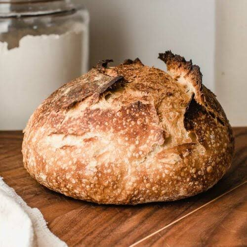

Rustic Sourdogh
My husband loves sourdough. It was a taste that had to grow on me.

The hardest part of making sourdough bread is waiting for your starter to be ready to make bread.
Sourdough starter
The starter is simple. Start with 1:1 Ratio of water and flour on day one.
Starting day 2 it is a ration of 1:1:1: water, flour, previous day starter mix.
- 50 grams of flour UNBLEACHED
- 50 grams of Water FILTERED
- 50 grams of your PREVIOUS day starter
Everyday you are going to feed your starter. This done by saving 50 grams of your day before and dumping the rest out.
I change my jar everyday to try and deteer any mold from growing.
You then mix in your flour and water. It should be the consistancy of thick pancake batter.
You place a loose lid over the top and leave alone until next feeding.
In about 5-7 days your starter should rise to double. After 2 days in a row of double rises, you can try your first sourdough bread.
Ingredients
- 2 cups of FlourUnbleached
- 3/4 cup of Water Filtered
- 1/3 cup of Starter
- 1.25 tsp of salt
Mixing the Dough
- Whisk the water and starter together
- Add in the flour and salt
- Mix with hands to combine everything and make a dough ball
- Cover with a damp towel and let it rest for 30 minutes
The Stretcg & Fold
- After 30 minutes, remove the towel
- Grab an edge of the dough and stretch it up and fold towards the middle.
- Do the strech up and fold towards middle, four times.
- Cover the dough, and let it rest for 30 minutes
- Idealy this process three more times (for a total of four times in 2 hours)
- Cover the dough, ideally in an airtight clear container... for 8-10 hours
This is the Formentation Stage
Leave your covered dough at room temperature. Once the dough has doubled in size you can move on to the next step.
Experiment with your fermentation times depending on how you like your bread and oven spring
Shape Your Dough
Gently place your dough on floured surface and form into a cirlcle.
You are going to want to kind of do the stretch and fold towards the middle.
Repeat this folding towards center until your dough takes shape. Once shaped, place your dough in a proofing basket that is dusted in flour.
Proofing
Place the covered dough in the fridge for at least 1 hour. Ideally around 24 hours but up to 48 hours.
Baking
- Preheat oven to 550°F.
- Cut a piece of parchment paper that fits inside your dutch oven with enough for you to drop your dough in & out.
- Place your empty dutch oven in the oven to preheat.
- Use the piece of parchment you cut and use it to plop your dough onto.
- Use a sharp knife or razor to score the dough as you wish. Dont score too deep!
- Remove your dutch oven from the oven.
- Using the parchment paper carefully lower your dough inside and close the lid.
- Place back into the over. Lower the oven temperature to 450°F.
- Bake for about 30 minutes.
- Remove lid and lower oven temperature to 400°F.
- Bake for another 10 minutes.
- Remove from oven.
- Using the parchment paper, remove the fresh bread and place on cooling rack.
- Let cool 1 hour.
Enjoy your freshly baked sourdough!!
Home